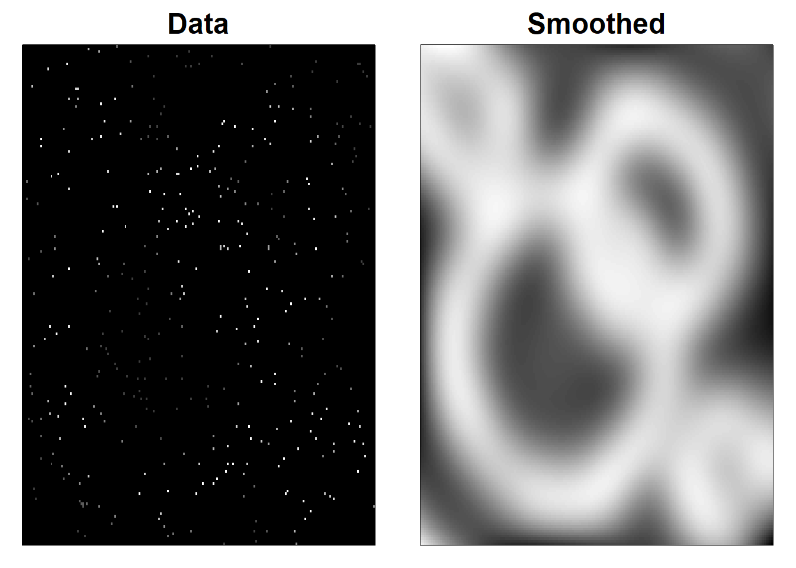

Chapter 3 Spatial Interpolation
Tensor product P-spline fit (Ethanol data).
A graph in the book ’Practical Smoothing. The Joys of P-splines. Paul Eilers and Brian Marx, 2019
func <- function(x, y, range,
yseg = 10, xseg = 10, deg = 3,
u = NULL, v = NULL,
lambda = c(1, 0.1), plot = TRUE, ...) {
if (is.null(u)) u <- seq(range[1], range[2], length = length(x))
if (is.null(v)) v <- seq(range[3], range[4], length = length(y))
xpars <- c(range[1], range[2], xseg, deg)
ypars <- c(range[3], range[4], yseg, deg)
# Compute one-dimensional base
Bx <- bbase(x, xpars[1], xpars[2], xpars[3], xpars[4])
By <- bbase(y, ypars[1], ypars[2], ypars[3], ypars[4])
nx = ncol(Bx)
ny = ncol(By)
# Compute tensor products
B1 = kronecker(t(rep(1, ny)), Bx)
B2 = kronecker(By, t(rep(1, nx)))
B = B1 * B2
n = ncol(B)
# Compute penalty matrices
Dx = diff(diag(nx), diff = 2)
Dy = diff(diag(ny), diff = 2)
delta = 1e-10
Px = kronecker(diag(ny), t(Dx) %*% Dx + delta * diag(nx))
Py = kronecker(t(Dy) %*% Dy + delta * diag(ny), diag(nx))
E = diag(n)
# Fit the model
lambdax = 1
lambday = 0.1
a = solve(t(B) %*% B + lambdax * Px + lambday * Py, t(B) %*% z)
zhat = B %*% a
r = z - zhat
cat("SD of residuals:", sd(r), "\n")
# Compute grid for predicted surface
Bgx <- bbase(u, xpars[1], xpars[2], xpars[3], xpars[4])
Bgy <- bbase(v, ypars[1], ypars[2], ypars[3], ypars[4])
A <- matrix(a, nx, ny)
Fit <- Bgx %*% A %*% t(Bgy)
if (plot) {
# Plot result and data
cols <- c("blue", "red")[(z > zhat) + 1]
pchs <- c("+", "-")[(z > zhat) + 1]
image.plot(u, v, Fit,
col = terrain.colors(100)
# xlab = "Compression ratio",
# ylab = "Equivalence ratio"
)
contour(u, v, Fit, add = T, col = "steelblue", labcex = 0.7)
points(x, y, pch = pchs, col = "blue", cex = 1.1, )
# title("2D P-splines for NOx emission, ethanol data", cex.main = 1)
}
listk(u, v, Fit)
}## 'data.frame': 88 obs. of 3 variables:
## $ NOx: num 3.74 2.29 1.5 2.88 0.76 ...
## $ C : num 12 12 12 12 12 9 9 9 12 12 ...
## $ E : num 0.907 0.761 1.108 1.016 1.189 ...m <- nrow(ethanol)
x <- ethanol$C
y <- ethanol$E
z <- ethanol$NOx
range <- c(7, 19, 0.5, 1.25)
r <- func(x, y, range)## SD of residuals: 0.1683194
# Tensor product P-spline fit and extrapolation (Ethanol data)
# A graph in the book 'Practical Smoothing. The Joys of P-splines'
# Paul Eilers and Brian Marx, 2019
library(SemiPar)
library(fields)
library(JOPS)# simulate data
m = 200
set.seed(2017)
x = 2 * (runif(m) - 0.5)
y = 2 * (runif(m) - 0.5)
z = exp(-x^2 - y^2)^2 + rnorm(m) * 0.1
sel = x > -0 | y > -0
m = length(x)
# Set parameters for domain
xlo <- -1
xhi <- 1
ylo <- -1
yhi <- 1
# Set P-spline parameters, fit and compute surface
xseg <- 10
xdeg <- 3
xpars <- c(xlo, xhi, xseg, xdeg)
yseg <- 20
ydeg <- 3
ypars <- c(ylo, yhi, yseg, ydeg)
# Compute basis
Bx = bbase(x, xpars[1], xpars[2], xpars[3], xpars[4])
By = bbase(y, ypars[1], ypars[2], ypars[3], ypars[4])
nx = ncol(Bx)
ny = ncol(By)
# Compute tensor products
B1 <- kronecker(t(rep(1, ny)), Bx)
B2 <- kronecker(By, t(rep(1, nx)))
B <- B1 * B2
# B = as.spam(B * (abs(B) > 1e-5))
n = ncol(B)
BtB = t(B) %*% B
Btz = t(B) %*% z
# Compute penalty matrices
Dx = diff(diag(nx), diff = 2)
Dy = diff(diag(ny), diff = 2)
delta = 1e-10
Px = kronecker(diag(ny), t(Dx) %*% Dx)
Py = kronecker(t(Dy) %*% Dy, diag(nx))
E = diag(n)
lambda1 = lambda2 = 1
a = solve(BtB + lambda1 * Px + lambda2 * Py, Btz)
zhat = B %*% a
# Compute grid for predicted surface
nu <- 50
nv <- 50
u <- seq(xlo, xhi, length = nu)
v <- seq(ylo, yhi, length = nv)
Bgx = bbase(u, xpars[1], xpars[2], xpars[3], xpars[4])
Bgy = bbase(v, ypars[1], ypars[2], ypars[3], ypars[4])
A = matrix(a, nx, ny)
Fit = Bgx %*% A %*% t(Bgy)
par(mfcol = c(1, 2), mar = c(3, 3, 2, 1), mgp = c(1.6, 0.8, 0))
# Plot result and data
cols = c("blue", "red")[(z > zhat) + 1]
pchs = c("+", "-")[(z > zhat) + 1]
image.plot(u, v, Fit, col = terrain.colors(100), xlab = "", ylab = "",
horizontal = T, legend.width = 0.7, cex = 0.8, legend.cex = 0.7,
cex.axis = 0.8)
contour(u, v, Fit, add = T, col = "steelblue")
points(x, y, pch = pchs, col = "blue", cex = 1.1)
x = x[sel]
y = y[sel]
z = z[sel]
m = length(x)
# Compute basis
Bx = bbase(x, xpars[1], xpars[2], xpars[3], xpars[4])
By = bbase(y, ypars[1], ypars[2], ypars[3], ypars[4])
nx = ncol(Bx)
ny = ncol(By)
# Compute tensor products
B1 <- kronecker(t(rep(1, ny)), Bx)
B2 <- kronecker(By, t(rep(1, nx)))
B <- B1 * B2
# B = as.spam(B * (abs(B) > 1e-5))
n = ncol(B)
BtB = t(B) %*% B
Btz = t(B) %*% z
lambda1 = lambda2 = 3
a = solve(BtB + lambda1 * Px + lambda2 * Py, Btz)
zhat = B %*% a
A = matrix(a, nx, ny)
Fit = Bgx %*% A %*% t(Bgy)
# Plot result and data
cols = c("blue", "red")[(z > zhat) + 1]
pchs = c("+", "-")[(z > zhat) + 1]
image.plot(u, v, Fit, col = terrain.colors(100), xlab = "", ylab = "",
horizontal = T, legend.width = 0.7)
contour(u, v, Fit, add = T, col = "steelblue", labcex = 0.7)
points(x, y, pch = pchs, col = "blue", cex = 1.1)
# Smoothing scattered data with 2D P-splines (Simulated data)
# A graph in the book 'Practical Smoothing. The Joys of P-splines'
# Paul Eilers and Brian Marx, 2019
library(ggplot2)
library(JOPS)
library(fields)# Simulate the rings
nx = 200
ny = 200
x = seq(-1, 1, length = nx)
y = seq(-1, 1, length = ny)
ex = rep(1, nx)
ey = rep(1, ny)
X = outer(x, ey)
Y = outer(ex, y)
R1 = sqrt((X - 0.3)^2 + (Y - 0.3)^2)
R2 = sqrt((X + 0.2)^2 + (Y + 0.2)^2)
R3 = sqrt((X - 0.7)^2 + (Y + 0.7)^2)
R4 = sqrt((X + 0.7)^2 + (Y - 0.7)^2)
Z1 = exp(-50 * (R1 - 0.4)^2)
Z2 = exp(-50 * (R2 - 0.6)^2)
Z3 = exp(-50 * (R3 - 0.2)^2)
Z4 = exp(-50 * (R4 - 0.2)^2)
Z = pmax(pmax(pmax(Z1, Z2), Z3), Z4) + 0.3
# Prepare bases
Bx = bbase(x, nseg = 20)
By = bbase(y, nseg = 20)
nbx = ncol(Bx)
nby = ncol(By)
# Prpare the penalty matrices
Dx = diff(diag(nbx), diff = 3)
Dy = diff(diag(nby), diff = 3)
lambdax = lambday = 0.1
Px = lambdax * t(Dx) %*% Dx
Py = lambday * t(Dy) %*% Dy
P = kronecker(Py, diag(nbx)) + kronecker(diag(nby), Px)
# Do the smoothing, using the array algorithm
W = matrix(runif(nx * ny) < 0.01, nx, ny)
Tx = rowtens(Bx)
Ty = rowtens(By)
Q = t(Tx) %*% W %*% Ty
dim(Q) = c(nbx, nbx, nby, nby)
Q = aperm(Q, c(1, 3, 2, 4))
dim(Q) = c(nbx * nby, nbx * nby)
r = t(Bx) %*% (Z * W) %*% By
dim(r) = c(nbx * nby, 1)
A = solve(Q + P, r)
dim(A) = c(nbx, nby)
Zhat = Bx %*% A %*% t(By)
# Make and save plots
cols = gray(seq(0, 1, by = 0.01))
par(mfrow = c(1, 2), mar = c(1, 1, 2, 1))
image(x, y, Z * W, col = cols, xlab = "", ylab = "", xaxt = "n", yaxt = "n")
title("Data", cex.main = 1.5)
image(x, y, Zhat, col = cols, xlab = "", ylab = "", xaxt = "n", yaxt = "n")
title("Smoothed", cex.main = 1.5)